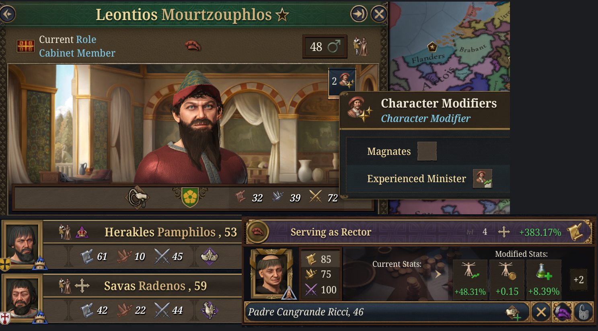
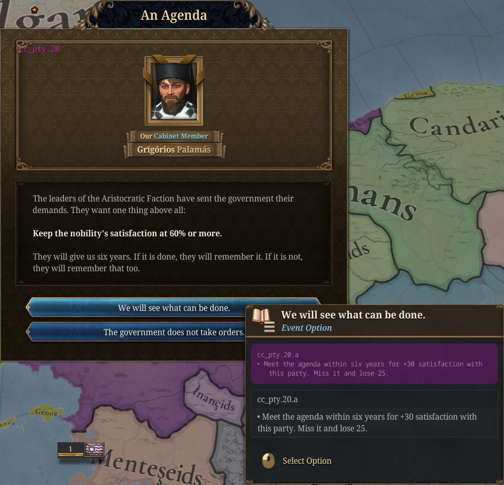
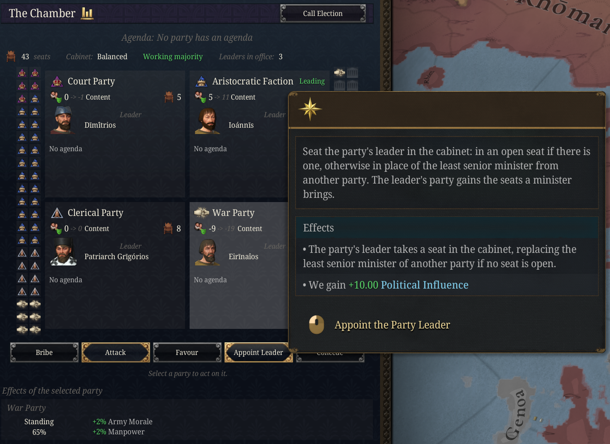
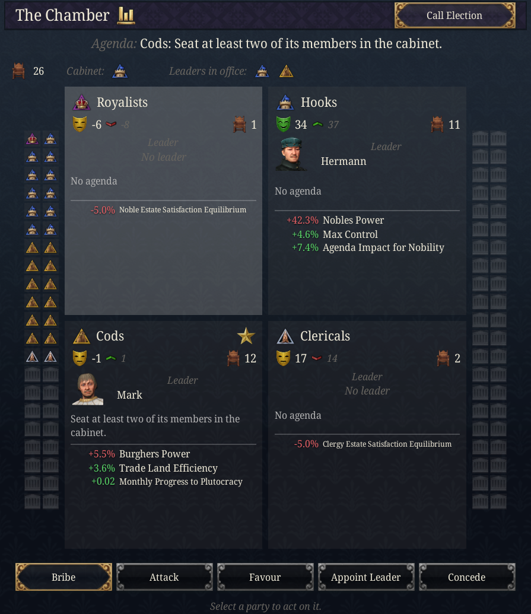

Dev Diary: Factions
Published: 2026-10-22
Four parties, the ministers who belong to them, and what they do when you ignore them.
Dev Note: the cabinet already had rivalries, careers and estate capture, but nothing that tied a minister to anyone outside the room. Factions is a new submod that gives every realm worth simulating a set of political parties. They draw their strength from the estates, staff your cabinet, keep score of how they are treated, and cost political influence to manage. It is also built to stay quiet: nearly all of it runs without a popup, and the few events it does fire are budgeted.

Four parties out of eleven
A realm has four parties at a time, chosen from eleven:
- Court Party: the crown's own people. Monarchies only.
- Aristocratic Faction: the nobility.
- Merchant Interest: the burghers and the trading houses.
- Clerical Party: the clergy.
- War Party: the officers. Strongest in tribes, hordes and realms at war.
- Agrarian Party: the peasantry.
- Reform Party: from the Renaissance on, for a better-run state. Not in tribes or hordes.
- Absolutist Party: from the Age of Absolutism, monarchies only.
- Regional Party: the provinces against the capital, in realms with several subjects or thirty provinces.
- Colonial Lobby: realms with colonial subjects.
- Liberal Party: only once Liberal Thought has spread far enough (see below).
Which four you get depends on your government, the age and the strength of your estates. A republic leans to the merchants and the reformers, a theocracy to the clergy, a horde to the officers and the nobility. Every fifteen to twenty-five years the line-up is reviewed. Each eligible party scores its estates' power plus those bonuses, the parties already in place get a head start, and the best four sit in the chamber. A party that survives keeps its satisfaction; a new one starts from nothing.
This is the zeitgeist part of the design. Nobody chooses to have an Absolutist Party in 1450, and nobody stops one appearing in 1650 if the crown is strong.
Everyone at court belongs to a party
Every adult at your court belongs to a party from the moment they arrive, so you know where a candidate stands before you appoint them. A cabinet trait that names a side decides it first: a royal absolutist sits with the absolutists if there are any and with the Court Party if not, and a merchant prince sits with the merchants. Failing that, the character's estate decides. Anyone left over draws evenly among the parties you have.
The party shows on the character sheet as "Member of the …", and as the party's icon in every character picker, cabinet appointments included. It matters because every minister brings their party 2 appointed seats in the chamber, and because a party's mood follows its members into office. A minister whose party is pleased works 5% better. One whose party is angry works 20% worse, no matter how good they are.

The chamber
A party's strength is its seats in the chamber, and the seats come from the realm itself.
Every location is worth seats by its rank: a megalopolis 3, a city 2, a town 1, and a rural settlement a fifth of one. Each location's seats are shared among the estates by how much power each holds there, and every party takes the seats of the estates behind it. So the cities fill the merchants' benches, the countryside the nobles' and the peasants', and a realm that builds towns changes its own politics.
Those counts only set the proportions. The chamber itself grows with the realm, from 20 seats for a single province to at most 84 for an empire, so a thousand locations do not become a thousand seats. Every minister in the cabinet also brings their party 2 appointed seats, up to half the chamber; the rest are elected. A party's power is its share of the chamber.
Each party also has a leader: its most senior minister. A party with nobody in the cabinet keeps its old leader while they live, and in your realm a new one steps forward if needed. A leader outside the cabinet is someone you can appoint.
Seats matter on their own, whatever a party's mood. Every party with a tenth of the chamber or more grants its standing, scaled by its share: the merchants add trade efficiency and burgher power, the Court Party legitimacy and crown power, the reformers cabinet efficiency and political influence. A party below a tenth is marginalised, and the estate behind it settles for less. Select a party's card and the panel lists exactly what it is granting the realm and at what strength.
The strongest party, if it holds 30% of the seats or more, leads the realm and slowly moves society its way: the merchants toward plutocracy, the clergy toward spiritualism, the reformers toward innovation, and so on.
Satisfaction
Satisfaction runs from -100 to 100 and is reviewed every two to four years, silently. Each review it moves halfway toward what the party expects, which is:
- how its estate is doing (for the Court Party, how much power the crown holds; for the reformers and liberals, how far society leans their way)
- +15 for one minister in the cabinet, +25 for two or more
- -20 if it holds a fifth of the seats or more and has no minister at all
- +15 if the head of the cabinet belongs to it, and +10 if the ruler does
Each card shows where a party is heading: "10 -> 33" means satisfaction 10, expecting 33 at the next review. Parties start a game at their expectation rather than at zero, and they do not wait for a review to notice the cabinet: seating one of a party's ministers raises its satisfaction by 10 at once, and dismissing one lowers it by 10.
Above 30 a party is pleased and gives the realm a bonus. Below -20 it is discontented and gives a penalty, and below -50 it is angry. Each party has its own: an angry nobility costs you control of the countryside, angry merchants cost trade efficiency, an angry Court Party costs diplomatic reputation and political influence. Both scale with the party's seats and with how strongly it feels, so a dominant angry party hurts a great deal more than a small one.
Parties tied to an estate also push that estate's parliament agendas when pleased and resist them when angry.
Stacked or balanced
The cabinet itself now has a shape.
A stacked cabinet, where one party holds more than half the cabinet, runs well: +5% cabinet efficiency, and the party that runs it gets a stronger bonus and moves society faster. Every other party expects less, though, and the court's rivalry score climbs.
A balanced cabinet, where no party holds more than 40% of the cabinet and at least three are represented, is steadier. Stability is cheaper, bribes and attacks cost a quarter less, and no party's expectation falls below -20. In exchange the bonuses are weaker and society barely moves.
Two opposed parties seated together, such as the nobility and the merchants or the clergy and the reformers, also feed the court's rivalry, which ties this into the existing rivalry events rather than adding new ones.
Agendas
A party with a quarter of the seats or more sets an agenda every five to twelve years. The leading party's agenda is shown above the chamber, and every card shows its own. It tells you in one event and gives you six years. Each party has three possible agendas, and it never picks one you have already met: the nobility might want its satisfaction kept above 60%, two of its people in the cabinet, or a larger share of power. The War Party might simply want a war.

Meet it and the party gains 30 satisfaction. Miss it and it loses 25. Either way the result is recorded in the panel rather than in another popup.
Five actions and an election
Select a party's card and five actions act on it.
- Bribe (10 political influence and some gold): +25 satisfaction at once. Once every two years per party.
- Attack (20 political influence): prosecute its leaders and close its clubs. Its elected seats fall by 40% for five years, it loses 30 satisfaction, and every party opposed to it gains 10. Needs the party to hold at least 10% of the seats. Once every five years.
- Ask a Favour (no price, needs satisfaction of 10 or more): the party lends you its people for five years. The merchants improve trade, the clergy raise religious influence, the officers stiffen morale, the reformers make the cabinet work better. It costs 15 satisfaction.
- Appoint the Leader (earns 10 political influence: the party owes you for the seat): the party's leader takes a cabinet seat, an open one if there is one, otherwise that of the least senior minister from another party. The party gains the appointed seats that come with it.
- Concede the Agenda (10 government power, 10 political influence and gold): the agenda counts as met now. The party gains 30 satisfaction and every party opposed to it loses 10.
Above the chamber, Call an Election (10 political influence, gold and some stability) counts the seats and reviews the parties at once instead of waiting. Once every ten years.

Political influence is the currency 1.4 already uses for appointments and policies, so managing your parties competes with managing your cabinet and your laws for the same budget. The chamber also pays some of it back:
- Cabinet shape: a balanced cabinet brings +0.5 political influence a month; a stacked one +10% political influence gain.
- Leaders in office: +0.05 a month for each party whose leader sits in the cabinet.
- Working majority: +15% political influence gain while the head of the cabinet's party holds 40% of the seats. A hung chamber, where no party holds 30%, costs 10%.
- Agenda dividend: meeting an agenda, on time or by concession, pays political influence equal to half the party's seats.
- Election mandate: an election pays 2 for every seat the head of the cabinet's party gains, and costs 1 for every seat it loses.
Parties you cannot ignore
Three parties have to be handled: the War Party, the Regional Party and the Liberal Party. If one of them is angry and holds a fifth of the seats or more, every review spent that way is a step toward open defiance:
1. a warning, which shows on the party's card and as a modifier 2. unrest: rebel growth and lost control 3. the outcome
The outcome depends on the party. The War Party attempts a coup, which is a disaster that stays until the officers are satisfied again or five years pass. The Liberal Party rises in an uprising, which works the same way. The Regional Party either raises a provincial league that takes about a fifth of your provinces into a civil war, or, if you have subjects, carries its grievance to them and they pull away. In each case you get a choice: concede, at a price, or fight it.

There are two ways out before that. Placate the party until it is no longer angry, or attack it until it holds less than a fifth of the seats. Both step the escalation back down. Doing neither is a choice too.
Liberal Thought
From the Age of Absolutism, liberal ideas start to spread in your capital and your cities. Each city has its own level, which grows with literacy, the presence of the court, the Enlightenment and a liberal-leaning society, and falls while the Absolutist Party leads the realm. The Factions situation's map mode shows where it has taken hold.

When the average passes 50, the Liberal Party forms and the next review brings it into the line-up. It wants a liberal society and term limits, and it is one of the three parties that will not stay quiet if ignored.
While the Reform Party or the Liberal Party leads the realm, term limits apply: a minister who has served ten years steps down at the next review and cannot return for ten. Long-serving favourites become a liability to whoever relies on them.
Names
Each party has a plain name, and some realms get the names their parties actually had:
- the Hooks and the Cods in Holland
- Guelphs and Ghibellines in early Italy
- Hats and Caps in Sweden from the Age of Absolutism
- Tories and Whigs, and the Court and Country parties, in Britain
- the Reform Party is a Humanist Circle before the Reformation

Keeping it quiet
Every one of these little systems is tempting to announce, and a game full of them becomes a game of closing popups. So:
- satisfaction, agenda results and the first two escalation steps appear only in the panel
- new agendas, new parties and the Liberal Party's arrival share one budget of about two events a decade
- the only character event, a minister crossing the floor, fires only for ministers currently in the cabinet and shares the cooldown of the existing rivalry events
- the outcomes of escalation always fire, because by then you have had two warnings
Parties are simulated for you, for the great powers and for any realm with 100 or more development. Smaller AI realms have none, which keeps the cost down and keeps the system aimed at the realms that matter. A game rule turns it off entirely.
Status
This is the first version, and it has not yet been played through. The numbers above are first guesses, and the Liberal Thought rate in particular will need tuning once it has been seen across a full game. Factions requires Flavorium Universalis, and with it loaded, the main mod's estate-capture events, court-captured modifiers and balanced-court bonus give way to the party versions for the realms that have parties.